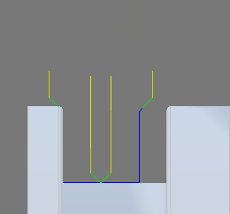
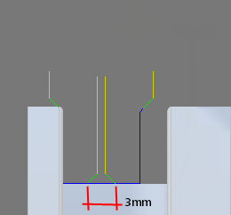

<div id="upDownOverlap"><p><b>上方向のみ</b> および <b>下方向のみ</b> の加工方向により分割された仕上げパスに使用するオーバーラップ距離を指定します。</p>
<table class="tipTable" cellspacing="10">
<tr>
<td><center></center></td>
<td><center></center></td>
</tr><tr>
<td><center><p><b>0 mm でのパス オーバーラップ</b></p></center></td>
<td><center><p><b>3 mm に設定したパス オーバーラップ</b></p></center></td>
</tr></table>
</div>